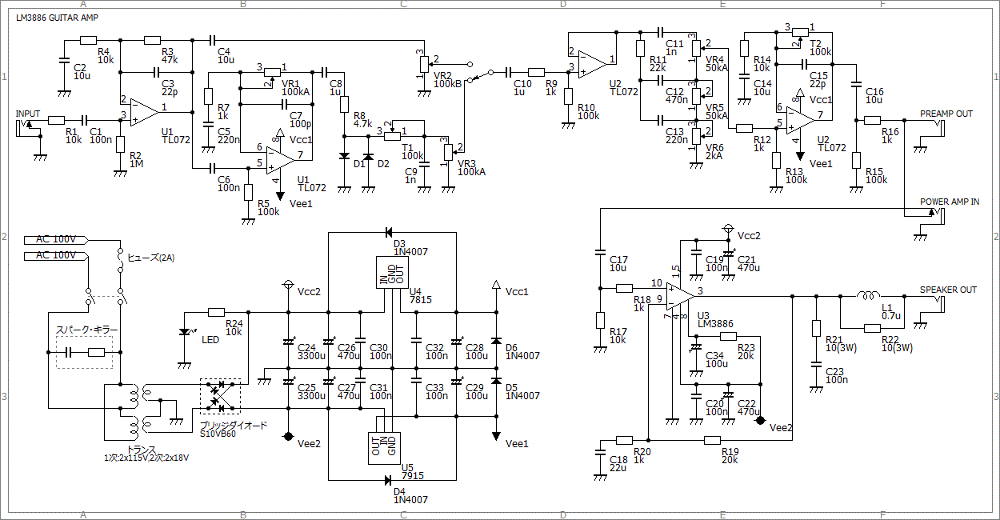

LM3886 Guitar Amp その1～構想編～
2009年10月24日 カテゴリー：ギターアンプ・ベースアンプ
ギターアンプの自作といえば、LM386を使ったミニアンプか真空管アンプが主流のような気がします。あえてそこを避けて今回製作したのは、LM3886というオーディオアンプ自作では割と有名なICを使ったアンプです。このICは割と簡単に大きな出力が得られ、しかも音も良い（歪みが少ない）らしいです。真空管ギターアンプを作る前に基準となるようなアンプを製作してみるというのが目的です。名前は特に思いつかなかったのでとりあえずLM3886ギターアンプというそのままの名前にしておきます。製作に関しては「情熱の真空管アンプ」という本を参考にしました（真空管使ってないけど…）。
目標とする出力は8Ωスピーカーで20Wとしました。自宅ではまず出せない音量ですがまぁ大は小を兼ねるということで。
LM3886のデータシートによると、8Ω負荷で20W出力の場合約±21Vの電源が必要になります。電源トランスをダイオード整流するとだいたいトランスの表示の1.3倍の電圧になるそうです。今回電源トランスは誘導ノイズが少ないらしいトロイダル型を使おうと思っているので、最も安いと思われるRSオンラインの製品で探すと、18Vのものがよさそうです。1次側が115Vなので予想される電圧は最高で100/115*18*1.3=20.3Vとなります（定格に余裕がある場合さらに高く出ます）。ICでの消費電力は10Wぐらいのようですので、全体の消費電力は30Wというところです（この計算は自信ないです）。余裕を見て50VAのトランスがよいでしょう。今回はケース内部に余裕があったので120VAのものを使っています（これだと4Ωスピーカーで40Wもいけそうです）。
ケースの大きさについては、あまり小さいとコントロールノブの数が限られてしまうし、大きすぎるとスピーカーキャビネットの上に乗りません。今回はLEADの250mm×150mm×60mmのものにしました。LM3886につける放熱器の大きさは計算で出せるみたいですが、ややこしそうなのでできるだけ大きいのを使えばOKということにしておきます。

回路図はこちら。（画像クリックで拡大）
※ディストーション部分のゲインが高すぎたため、R6(10kΩ)を削除（2014年6月15日）
LM3886はリップルに強いらしく電源の電解コンデンサの容量をあまり大きくする必要はないらしいです。電源部分の3300uF、470uFのコンデンサは35V耐圧を使ってます。本来は50V耐圧がよいです。整流用ブリッジダイオードは耐圧600V、10Aのものを使っています。また、プリアンプ用に3端子レギュレータを使って±15Vを作っています。IC2個の消費電流はせいぜい20mA程度なので、放熱器はつけなくてもOKでしょう。
パワーアンプの部分ですが、ほぼデータシートのままです。GeneralGuitarGadgetsの回路はギター用に少し帯域を狭くしてあるみたいです。
プリアンプの部分ですが、一応ディストーションでもつけようかと思いスイッチで切り替えられるようにしています。ノブの数が限られているのでディストーションのトーンとクリーンのゲインはトリマーにしています。トーン回路はありふれたフェンダー風の定数です。
その2～製作編～に進む
その3～完成編～に進む